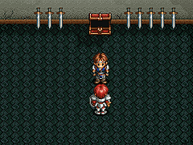
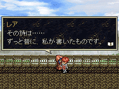
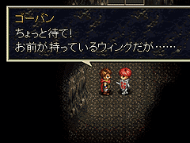
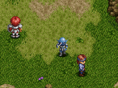
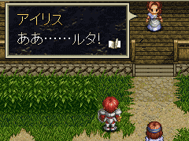
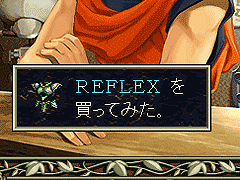

目次 > ゲームについて > 日本Falcom 攻略 > Ys > 情報
らんの眼
Ys(イース) Ys Eternal(VE)/Ys Complete
| 概要 | 情報 | ボス戦 |
| 敵キャラ一覧 | アイテム一覧 | 攻略チャート |
| 地図 | ダウンロード | イースの本 |
| 経験値表 | 地名一覧 | タイムアタック |
| ETERNAL / Complete 比較 | キャラクター一覧 | |
| Ys 攻略へ | 目次へ戻る |
| [ 1 ] [ 2 ] [ 3 ] [ 4 ] [ 5 ] [ 6 ] [ 7 ] [ 8 ] [ 9 ] |
| TALWARL をただで入手 |
|
フィーナを救出後、ミネアの町の酒場へ移動すると、バルバド自衛団の1
人が酒を飲んでいます。彼に話し掛けたあとに、バルバドへ行き、スラフに話しかけると、倉庫へ案内してくれるイベントが発生し、TALWARL
をプレゼントしてくれます。  |
| 紙切れの秘密 |
| 草原にある宝箱を開けると入手できるアイテム「紙切れ」。カギをかけた宝箱の中にあるアイテムなので、一応重要なもののようです。 レアに「銀のハーモニカ」を返したあとに、レアの前で「紙切れ」を使用すると、レアがお礼を言ってから「紙切れ」を引き取ります。その後アドルをミネアの町の城壁から、ミネア街内部へ移動させると、ちょっとしたイベントが見られます。  |
| しつこいアドル君 |
| レアに「銀のハーモニカ」を返したあとに、何度もレアに話し掛けましょう。ごくまれに、メッセージが変化します。 |
| 天井にゴツン |
| 「ウイング」を所有した状態で、ダームの塔へ乗り込もうとすると、ゴーバンが勝手に回収してしまいます。 どうやら、ダームの塔内部で使うと天井にゴツンと頭をぶつけ、命はないのだとか。やさしい盗賊ですね。  |
| アドル君の人助け |
| ゼピック村にいるルタ＝ジェンマの妻(Complete ではアイリスという名前がついてます)に話しかけていると、神殿で「イースの本」を入手後に、草原でルタ＝ジェンマが魔物に襲われています。彼を助けると、ちょっとしたイベントが見られますし、ゲームを進めダームの塔で再び彼と出会ったときに若干セリフが変化します。 また、「イースの本」入手前に会う場合は、いったんバルバドにブルドーの病院へ行き、その後、草原に行くと会うことができます。 ちなみに、魔物に攻撃されているルタ＝ジェンマに話しかけることもできます。   |
| 低ランクの装備品を購入する |
| 低いランクの装備品を購入する(TALWARL を持った状態でLONG SWORD を買う
など)と、メッセージが変化します。どうやらアドルには収集癖がないようです。  |
| [ 1 ] [ 2 ] [ 3 ] [ 4 ] [ 5 ] [ 6 ] [ 7 ] [ 8 ] [ 9 ] |
| 概要 | 情報 | ボス戦 |
| 敵キャラ一覧 | アイテム一覧 | 攻略チャート |
| 地図 | ダウンロード | イースの本 |
| 経験値表 | 地名一覧 | タイムアタック |
| ETERNAL / Complete 比較 | キャラクター一覧 | |
| ページ上部へ | Ys 攻略へ | 目次へ戻る |